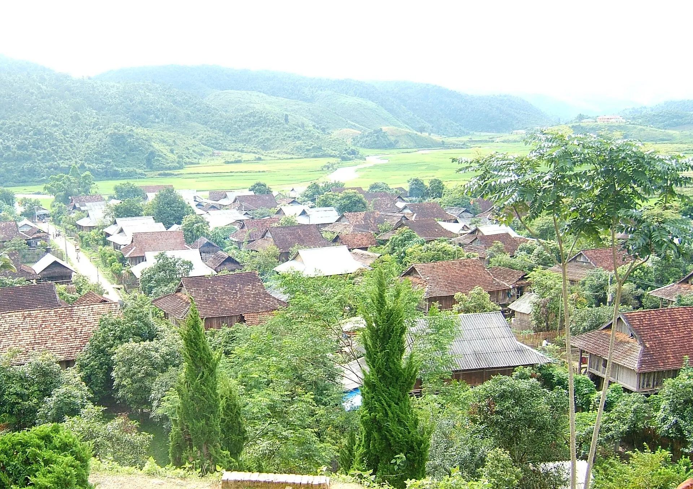

Bê chao (fried veal)
Young veal boiled then flash-fried, dipped in spicy cham cheo sauce.
Illustrative photo: A highland meat platter
A plateau over 1,000 m high that stays cool all year, famous for heart-shaped tea hills, plum valleys, white mustard flowers in Nov – Dec and plum and peach blossoms in early spring. Only about 200 km from Hanoi – an ideal weekend escape.
Loading weather...
Tap a month to see if it's a good time to go
Na Ka valley turns white with plum blossom, dotted with pink peach.
It is cold and misty – bring warm layers.
Fields of white mustard flowers across Chieng Di and Na Ka.
Some fields charge 20,000–30,000đ for photos.
Lunar-calendar festivals move each year – check the official dates before you go.
Young veal boiled then flash-fried, dipped in spicy cham cheo sauce.
Illustrative photo: A highland meat platterSmall fish clamped in bamboo and grilled with mac khen pepper.
Illustrative photo: Grilled fishFresh milk, yogurt and milk candy from the plateau's dairy farms.
Illustrative photo: Dairy cows like those raised in Moc ChauFragrant sticky rice with sesame salt and smoked buffalo.
Illustrative photo: Sticky riceFried veal, steamed veal, grilled stream fish
Thị trấn Nông Trường Mộc Châu Updated 09/2026 ReportFresh milk, yogurt, milk candy
QL6, thị trấn Nông Trường Mộc Châu Updated 09/2026 ReportSalmon and sturgeon hotpot
Tiểu khu 19/5, thị trấn Mộc Châu Updated 09/2026 ReportUpland sticky rice, smoked buffalo, plums
Chợ trung tâm thị trấn Mộc Châu Updated 09/2026 ReportBeef pho or pork-ball noodles for breakfast
Chợ thị trấn Mộc Châu Updated 09/2026 ReportGrilled stream fish, wild greens
Bản Áng, Đông Sang Updated 09/2026 ReportGrilled local pork, upland sticky rice
Tiểu khu 70, Mộc Châu Updated 09/2026 ReportThai family meal with pa pinh top grilled fish
Bản Nà Ka Updated 09/2026 ReportIndicative prices per person. Tap an address to open Google Maps for opening hours and the latest reviews.
Photos among curving tea rows in the early morning.
A falls as soft as a Thai girl's scarf.
White mustard in Nov – Dec, plum blossoms in Na Ka valley in Jan – Feb.
One of the world's longest glass-bottomed footbridges over a deep gorge.
Suggested for this destination and month (pick a start date in the Itinerary section to change the month). Tick items to remember what you have packed.
Spotted a changed price, opening time or closed shop? Report
400k–1M / night
Near the tea hills and veal restaurants, easy to get around.
250k–700k / night
Thai stilt houses by the pine forest.
1.2M–3.5M / night
Bungalows overlooking tea hills, with pools.
Bus or limousine Hanoi – Moc Chau ~4 h via Highway 6 (200 km), frequent departures from My Dinh bus station.
| From Hanoi |
|
|---|---|
| From Da Nang |
|
| From Ho Chi Minh City |
|
Estimated travel time; one-way budget fare per person – for reference. The option in bold is our suggestion.
Indicative room rates for 2 people per night; higher at Tet, holidays and weekends. Việt Travel earns no commission from booking sites.
Việt Travel · Son La · Best time: October – March
Drive from Hanoi on Highway 6 (~4 h), stopping at Thung Khe pass for views of Mai Chau valley.
Walk the heart-shaped tea hill, sip shan tuyet tea, visit Dai Yem waterfall.
Fried veal and grilled stream fish in Nong Truong town.
A short night stroll, then back to rest
Breakfast at a busy local eatery near your stay
Sunrise at Ang village pine forest and a boat on the lake.
Walk the Bach Long glass bridge over the gorge.
A short night stroll, then back to rest
Grab banh mi or sticky rice to go if leaving early
Na Ka plum valley (blossoms Jan – Feb, fruit May – June).
Chieng Di mustard fields (Nov – Dec) and a dairy farm.
Folk performances and bamboo rice at a Thai homestay.
A short night stroll, then back to rest
End of tour: check out, shop for local specialties and head home.
Breakfast at your stay (often included in the room rate)
Walk into the H'Mong village of Hua Tat in the mountains.
Chieng Khoa waterfall and Bat cave.
BBQ and black-chicken hotpot at the homestay.
A short night stroll, then back to rest
End of tour: check out, shop for local specialties and head home.
Breakfast at a busy local eatery near your stay
Detour through Mai Chau (Hoa Binh), cycling Lac and Pom Coong villages.
Dinner near your stay – pick a place busy with locals
Arrive in Hanoi around 8 pm.
End of tour: check out, shop for local specialties and head home.
Breakdown: budget
Breakdown: comfort
Breakdown: budget
Breakdown: comfort
Breakdown: budget
Breakdown: comfort
Excludes flights/transport to Moc Chau Plateau. Prices are indicative and vary by season.
Entrance fees & opening hours for sights in Moc Chau Plateau
Visiting more than one place? Combine Moc Chau Plateau with other destinations.
Share your experience
Reader photos
No photos yet – be the first to share a moment in Moc Chau Plateau!
Share your photo